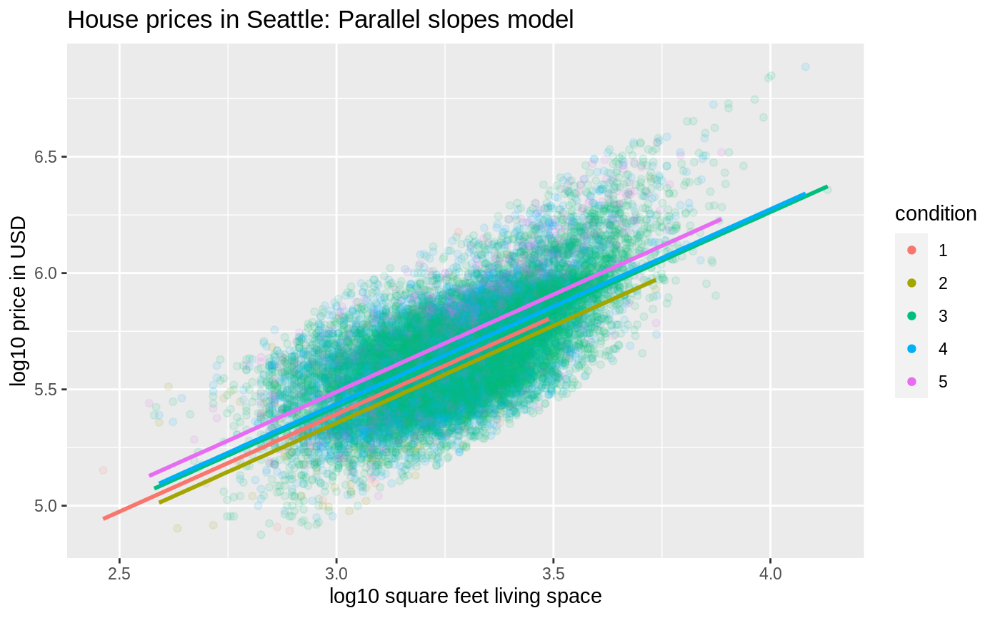

NOTE: THIS FUNCTION WILL SOON BE DEPRECATED; PLEASE USE {geom_parallel_slopes()}
INSTEAD. Output a visualization of linear regression when you have one numerical
and one categorical explanatory/predictor variable: a separate colored
regression line for each level of the categorical variable
gg_parallel_slopes(y, num_x, cat_x, data, alpha = 1)
| y | Character string of outcome variable in |
|---|---|
| num_x | Character string of numerical explanatory/predictor variable in
|
| cat_x | Character string of categorical explanatory/predictor variable
in |
| data | an optional data frame, list or environment (or object
coercible by |
| alpha | Transparency of points |
A ggplot object.
library(ggplot2) library(dplyr) library(moderndive) # log10() transformations house_prices <- house_prices %>% mutate( log10_price = log10(price), log10_size = log10(sqft_living) ) # Output parallel slopes model plot: gg_parallel_slopes(y = "log10_price", num_x = "log10_size", cat_x = "condition", data = house_prices, alpha = 0.1) + labs(x = "log10 square feet living space", y = "log10 price in USD", title = "House prices in Seattle: Parallel slopes model")#> #> #> #># Compare with interaction model plot: ggplot(house_prices, aes(x = log10_size, y = log10_price, col = condition)) + geom_point(alpha = 0.1) + geom_smooth(method = "lm", se = FALSE, size = 1) + labs(x = "log10 square feet living space", y = "log10 price in USD", title = "House prices in Seattle: Interaction model")#>